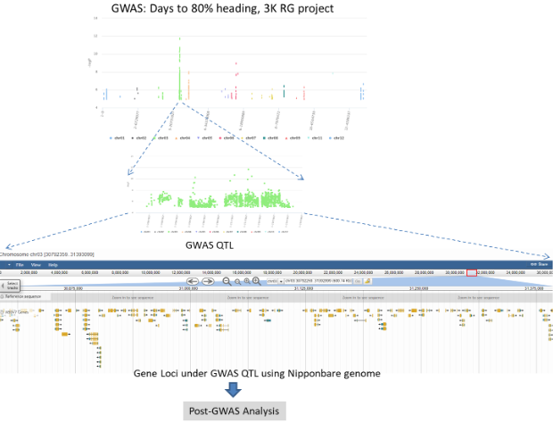
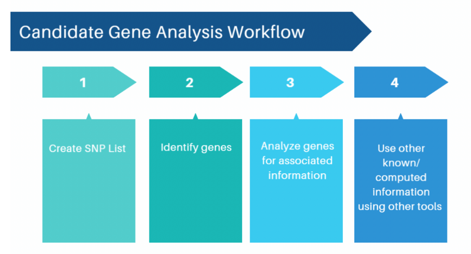
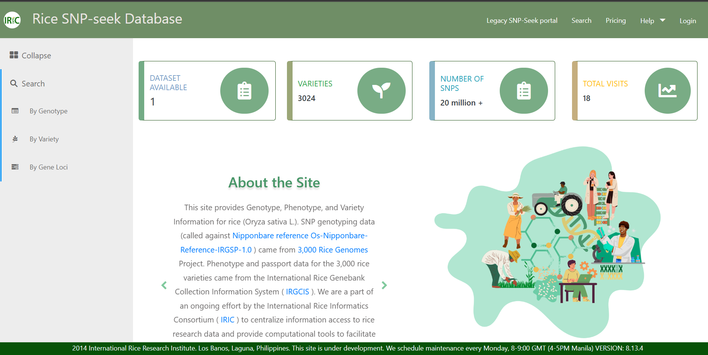
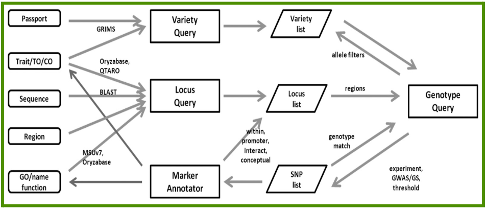
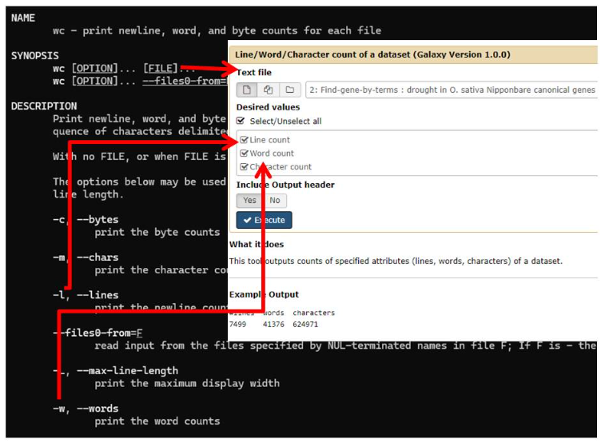
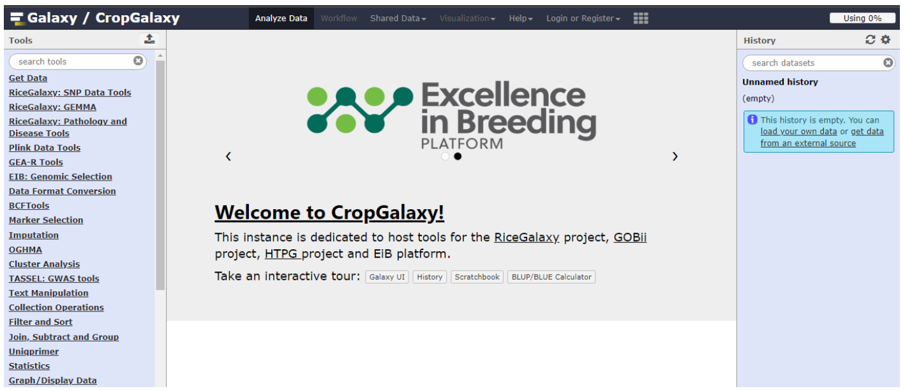
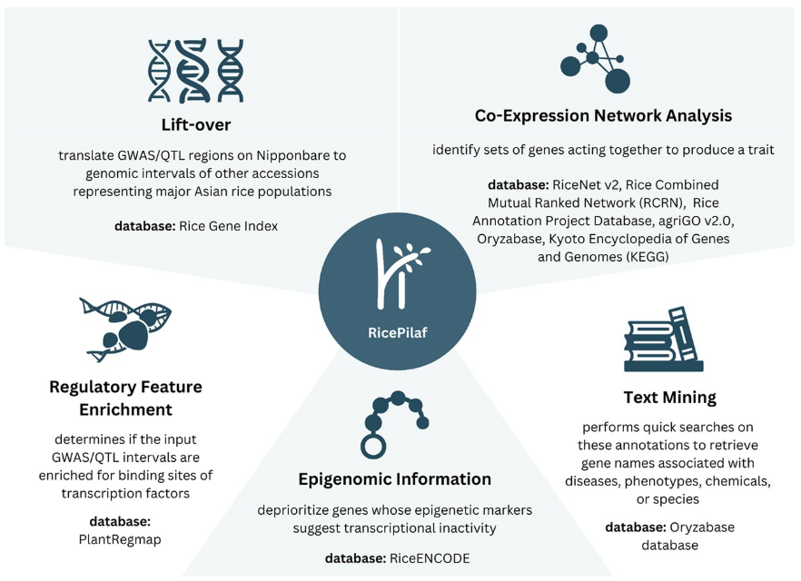
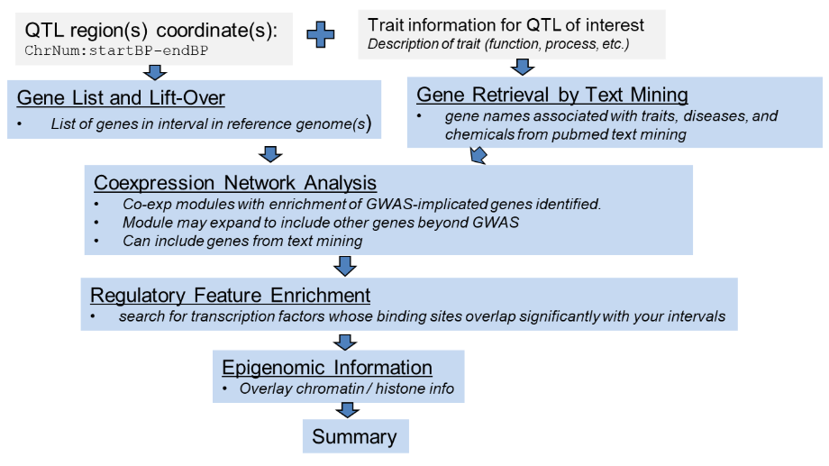

🧭 Module Overview:
🎯 Post-GWAS Analysis using SNPSeek, CropGalaxy, and RicePilaf
In this module, we will cover basic analysis methods for identification of candidate genes from highly associated genome-wide association studies (GWAS) regions. We will also predict the putative effects of SNPs on identified candidate genes. We will use the following rice-specific tools:
- Rice SNP-Seek
- CropGalaxy
- RicePilaf
👥 Target Audience
✅Participants should have prior knowledge and experience on genome-wide association studies (GWAS).
🏁 Goal
Post-GWAS Analysis
Genome-wide association studies (GWAS) is instrumental in identifying genetic variants associated with various traits. However, the raw results from GWAS, typically in the form of significant single nucleotide polymorphisms (SNPs), are only the beginning. Performing post-GWAS analysis is a crucial subsequent step to interpret these associations, understand underlying biological mechanisms, and subsequently apply this information to breeding programs.
Why perform Post-GWAS analysis?
- ✔️ Post-GWAS analysis helps validate the results from the genome-wide association study (GWAS) to better understand the biological functions and mechanisms that link the significant variants (i.e, SNPs) to the trait of interest.
- ✔️ Post-GWAS analysis in rice involves the use of various bioinformatics tools and databases to prioritize candidate genes, validate their functions, and integrate findings into practical breeding strategies.
- ✔️
We perform post-GWAS analysis to answer questions such as:
- - Is there support from annotation for the loci?
- - Are there known genes with functional evidence?
- - Are there SNPs that affect the function?
- - Do the haplotypes make sense?
Post-GWAS Analysis Considerations
In performing post-GWAS analysis, it is important to consider several points:
-
Significance of the SNP
- Smaller p-values, below the significance threshold (SNP is significantly associated with the trait)
- For more information about SNPs and its effects, refer to this external lesson and the previous module on GWAS.
- It is important to note, however, that some SNPs may NOT lie within the candidate gene, but are just nearby, close to the gene.
- Prior information about the genes
- Literature and data mining (PubMed, publication-specific deposited data sets) includes experimental information / results that validate the function of candidate genes from previous studies.
- Genes and annotations/re-annotation from well-established databases
- i. Primary gene models : Rice Genome Annotation Project, RAP-DB
- ii. Secondary annotation of genes : Gramene, ENSEMBL Plants, Rice SNPSeek, Oryzabase, QTARO / OGRO
- Interpretation involving the trait, genes, and its expression needs expert knowledge s (biochemical pathways, protein interaction networks, gene networks, protein docking, etc.).
Candidate Gene (CG) Analysis
Assuming you have significant GWAS peaks, the next step would be to identify candidate genes responsible for your trait of interest.
Candidate gene analysis focuses on investigating specific genes that are believed to be biologically relevant to the trait or disease under study (an example in Figure 3.1).

Figure 3.1. Information flow from GWAS study, identified GWAS QTL, genes under GWAS QTL, leading to post-GWAS analysis (using days to 80% heading as trait from the 3K Rice Genomes project).
- Candidate gene - a gene that has been identified as related to a particular trait such as phenotype, disease, or condition, (Varshney, 2006).
-
Analysis framework for post-GWAS analysis:
- Forward Genetics :
- Enriched/over-represented biological theme(s) from a selected list of genes “I have a list of genes from a small QTL from GWAS, and I wish to know more of the biology behind this gene list.”
“I have a QTL from a GWAS study, mapped using markers from the rice reference (Nipponbare) genome, how does the QTL *look* like in another genome of a variety that’s more closely related to my material?”
Rice varieties, especially those in different sub-populations, may contain sets of genes that are distinct from each other. QTL regions, when inspected in a particular genome (e.g. japonica Nipponbare) may be lacking some genes in the equivalent QTL region when inspected in another variety’s genome (e.g. aus N22), and vice-versa.
The set of CGs in the QTL may have a particular biological theme (e.g. metabolic pathway/process, a particular gene function, or a component of a cellular or organ structure) over-represented in this subset, that may be important to the trait of interest.
Basic CG analysis Workflow
There are many ways to perform candidate gene analysis. Below is a simple workflow to do CG analysis.

Figure 4.1. Simple workflow to do candidate gene analysis
Create SNP List or range of SNP positions in genome (chr, range of positions of SNPs in base pair, example Chr01:1000-10000; Chr02:3000-50000)
Generate gene list within the given range.
Analyze genes for associated information (as a separate exercise, also identify Marker/SNP effect on candidate genes using snpEff)
Use other k-nown/computed information using other tools (e.g. websites such as RicePilaf, KnetMiner,RiceNet)
- a. Identify enriched biological themes associated with the gene list
- b. Identify co-expressed genes (co-expression network) : genes that are in cis (contiguous to the associated SNPs) or in trans (genes located outside the GWAS region (may be in the same chromosome but far away from the GWAS region or totally in another chromosome) and NOT in the identified gene list).
Several publicly available tools can be used to perform candidate gene analysis. In the next section, you will learn about three of them: Rice SNPSeek, CropGalaxy, and RicePilaf.
Rice SNPSeek (v3)
Rice SNPSeek (v3) is an online web application that provides a user-friendly, comprehensive database for the genetic variations, phenotypes, and variety information of the 3000 rice genomes accessions. Click here to know more about the 3K Rice Genomes project. To know more about the scientific output of the 3K RG project, read Genomic variation in 3,010 diverse accessions of Asian cultivated rice

Figure 5a.1. The landing page of Rice SNP-Seek V3.
Rice SNPSeek offers the following functionalities:
-
Search queries:
Rice SNPSeek allows users to search genotypes against single to multiple reference genomes, gene loci of interest, as well as varietal passport and morphological data. It also allows combined queries on the 3K rice genomes and other rice datasets hosted in the platform. Users can also generate genotype matrices of indels across multiple varieties.
-
Genome Visualization:
The application allows genome visualizations to display the sequences and gene models, as well as the alignment of the 3000 rice accessions against the reference. This helps in verifying visually whether SNP locations lie within or nearby certain gene loci.
-
SNP/Marker Annotator:
Users can create a list of significant markers from their GWA studies and use this feature to annotate markers with evidence from other databases and/or analyses such as rice gene models, and SNP effects from SNPeff results.
These are only some of the functionalities that Rice SNPSeek offers. To use the platform and know more about its features, go to the SNP-Seek v3 site.
The figure below shows the connection between several query workflows. Users can construct a variety list or a locus list, then use these in genotype query. SNP lists, on the other hand, can be extracted from a genotype query, and constrain another genotype query. Finally, one can annotate SNPs using Marker Annotator to help prioritize candidate genes from GWAS.

Figure 5a.2. A query workflow in Rice SNP-Seek V3.
Here’s a video demonstrating the key features of Rice SNPSeek.
CropGalaxy
CropGalaxy is a federated instance of Galaxy which houses tools and datasets for crop genomic analysis. It stemmed from the original Galaxy platform initially developed for biomedical research. To learn more about the Galaxy platform, go to this link and read this paper - The Galaxy platform for accessible, reproducible, and collaborative data analyses: 2024 update.
Recall in the Linux module that you learned how to run analysis software under the command-line environment. Galaxy provides a graphical interface “wrapper” to these command-line tools so that you don’t need to remember how to type-in these commands. It also provides a workflow environment where you can “string” a series of commands you repeatedly use in an analysis series.

Figure 5b.1. The tool “Line/Word/Character count of a dataset” runs the command-line unix tool “wc” on the background.
Galaxy offers three core features that fit our needs in rice genomics:
- Accessibility
The platform enables users without programming experience to run tools and workflows easily by providing a graphical user interface to bioinformatics tools commonly run on command-line. - Reproducibility
Galaxy captures information so that any user can repeat and understand the complete computational analysis done. - Transparency
Galaxy allows users to share and publish analyses via the web and create interactive, web-based documents that describe the complete analysis.

Figure 5b.2. The landing page of CropGalaxy.
CropGalaxy contains shared datasets such as high-density genotypes from the 3KRG, and annotations of new reference genomes for rice. It also offers freely available tools to empower the plant research community to perform genomics analyses: GWAS, post-GWAS, primer design, population diversity and genomic prediction.
Here’s a video on how to access CropGalaxy, as well as some of the functionalities of the platform.
RicePilaf
RicePilaf is a web-based post-GWAS/QTL application that integrates pangenomic, coexpression, regulatory, epigenomic, ontology, pathway, and text-mining information. It aims to provide functional insights into rice QTLs and GWAS regions identified from QTL and GWAS mapping studies.
In this publication, you are expected to learn the various tools incorporated in RicePilaf, and have an overview of the algorithms/computational methods used in these tools.
An overview of RicePilaf’s functionalities is shown in Figure 5c.1.

Figure 5c.1. RicePilaf graphical abstract. RicePilaf crosses GWAS/QTL-mapping results with multiple data sources on rice.
A typical analysis flow in RicePilaf is illustrated in the diagram in Figure 5c.2.

Figure 5c.2. Typical analysis workflow using RicePilaf with a known QTL region and trait description information as input data.
Watch the example RicePilaf analysis (video) using preharvest sprouting QTLs, from the RicePilaf paper. In this video, step-by-step analysis of the pre-harvest sprouting QTLs is demonstrated, for each of the component tools in RicePilaf.
Look at the video description in YouTube for the corresponding time-stamped chapters. The tools demonstrated are the following:
- Gene List and lift-over: include MH63, IR64 genomes
- 0:00 Start of the PHS analysis demo in RicePilaf
- 0:07 Select PHS example as interval for analysis
- 0:10 Click on "Proceed to Analyses Menu"
- 0:14 Using the "Gene List and Lift-Over" menu
- 0:25 Select genome for lift-over on drop-down menu
- 0:36 Select MH63 genome
- 0:41 Add IR64 genome
- 0:47 Click on "Show gene list" and inspecting/navigating the result output
- 1:48 Exporting the results as csv file
- Gene retrieval by text mining: Use “pre-harvest sprouting” as key search phrase
- 1:58 Using the "Gene retrieval by text mining" tool
- 2:05 Select the example query "pre-harvest sprouting"
- 2:13 Inspecting the output of the "gene retrieval by text mining" tool
- Coexpression network analysis: Inspect the top 2 modules and the connectivity of the GWAS genes with other genes in the network
- 2:39 Using the "Coexpression Network Analysis" tool
- 3:05 Inspecting the output of the Coexpression analysis tool
- 3:15 Inspecting the top module (most significant) output in detail
- 3:37 Inspecting the connection of the 3 genes from the region to other genes in the network
- 4:02 Inspecting another module output (the 2nd significant)
- 4:09 Inspecting the connection of the 2 genes from the region to other genes in the network
- Regulatory feature enrichment tool use and inspection of the output
- 4:25 Using the "Regulatory Feature Enrichment" tool
- 4:45 Inspecting the output of the Regulatory feature enrichment tool
- Epigenomic information tool, inspect the output for 2 QTLs, note the active and inactive regions based on the results in the genome browser
- 5:01 Using the "epigenomic information" tool
- 5:33 Inspecting the output of the epigenomic information tool (1st interval) - with inactive regions
- 5:46 Inspecting the output of the epigenomic information tool (2nd interval) - no inactive region
- Generate the Summary output of the analyses, explore the output table.
- 6:14 Generating the summary output of all tools
- 6:30 Inspecting the gene list from the summary output
- Inspecting the gene list from the summary output
- 7:01 Reset all analyses before running a fresh one.
Hands-on
Summary
In this module, we introduced three web resources specialized for rice post-GWAS analysis: Rice SNP-Seek, CropGalaxy, RicePilaf. It is expected that you have learned how to use these online resources using the sample datasets provided.
- Post-GWAS analysis is an essential step after identifying genome regions (either by GWAS or QTL mapping) that are associated with traits of interest. A typical QTL identified from GWAS may span a large portion of the genome and contain up to thousands of genes within the region, and it is a resource-intensive exercise to experimentally study these genes within the GWAS region.
- Utilizing analysis frameworks implemented in the various tools demonstrated, provides a systematic method of filtering and prioritizing candidate genes for further experimentation, resulting in a reduction from hundreds or thousands to potentially tens of genes to investigate. Furthermore, genes that are not within the QTL region that may be causative to the trait of interest could be identified; such genes could be missed if the information used is only the QTL region from GWAS.
- Post-GWAS analysis is by no means an endpoint to CG discovery itself. Rather, it presents a smaller and better-informed set of candidate genes as hypotheses for further testing.
References
- The 3,000 rice genomes project. https://doi.org/10.1186/2047-217X-3-7
- Genomic variation in 3,010 diverse accessions of Asian cultivated rice.https://doi.org/10.1038/s41586-018-0063-9
- Varshney, R. K., Graner, A., & Sorrells, M. E. (2006). Genic microsatellite markers in plants: features and applications. Trends in Biotechnology, 24(2), 71-81. https://doi.org/10.1016/j.tibtech.2004.11.005
- Rice SNP-Seek database update: new SNPs, indels, and queries. https://doi.org/10.1093/nar/gkw1135
- Rice Galaxy: an open resource for plant science. https://doi.org/10.1093/gigascience/giz028
- RicePilaf: a web-based post-GWAS/QTL application for functional insights into rice QTLs and GWAS regions.https://doi.org/10.1093/gigascience/giae013